We'll guide you through adding web push for Chrome, Safari, and Firefox for your Wordpress blog.
First you'll get some required keys from Google. Then you'll be on our website creating a new app and setting up web push for each browser. This entire process should take around 15 minutes.
Please follow each step in order! If you're ever stuck or have questions, click the bright red button to chat with us! We read and respond to every message.
Click Get Google Keys to begin.
To begin, we'll create and configure a Google Project. This authorizes us to use Google's web push services for your notifications.
- 1
-
Create a Google Developers account or log in to your existing account.
- 2
-
Once you're logged in, click Create project.
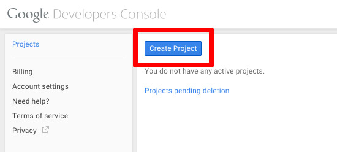Choose any name for your project. Here we use
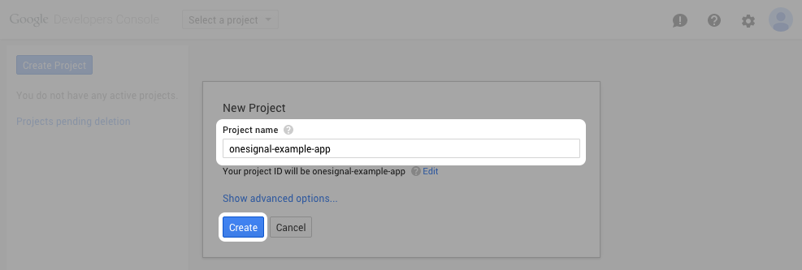example-project. Click Create. - 3
-
Find your Project number. Save this number!.
It can take a minute for your project to be created. You'll be redirected to your new project page.
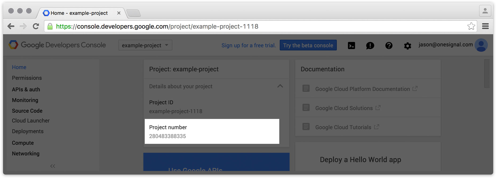Project Number
Save your project number. You'll need it on the next page.
- 4
-
Click APIs & auth > APIs on the left sidebar.
On the right pane, in the search box, type
cloud messaging.Select Google Cloud Messaging for Android.
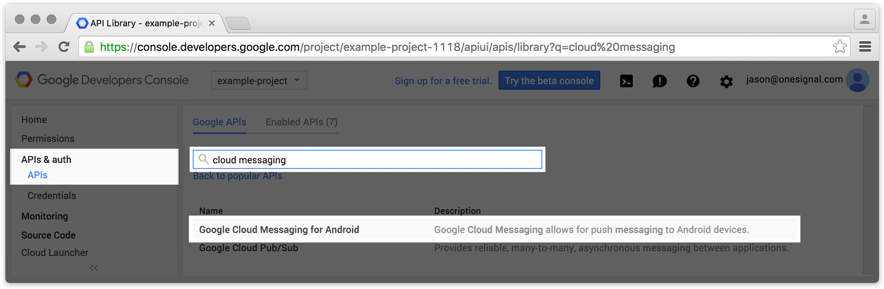Click Enable API.
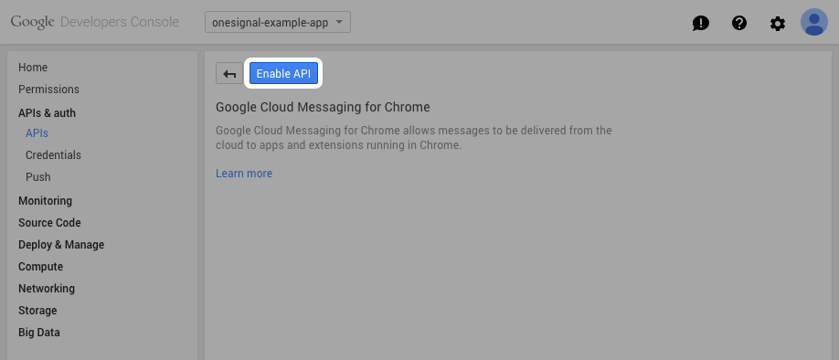 - 5
-
Click APIs & auth > Credentials on the left sidebar.
On the right pane, click Add credentials > API key.
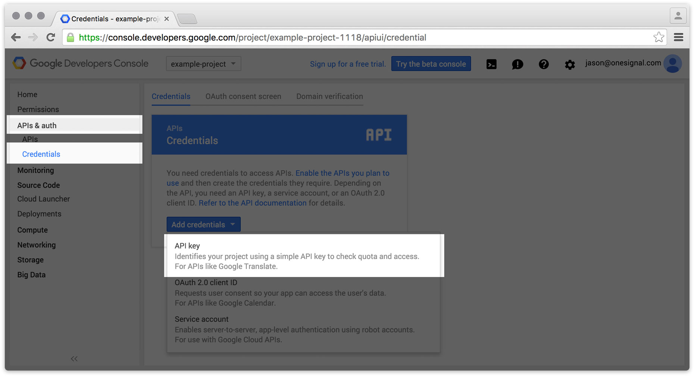Click Server Key.
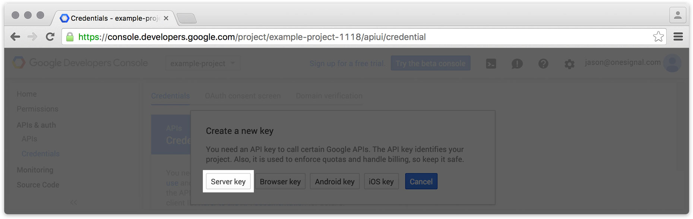Without entering any values, click Create.
Make sure to leave the IP address textbox blank. You may name the key if you'd like, but it's not necessary.
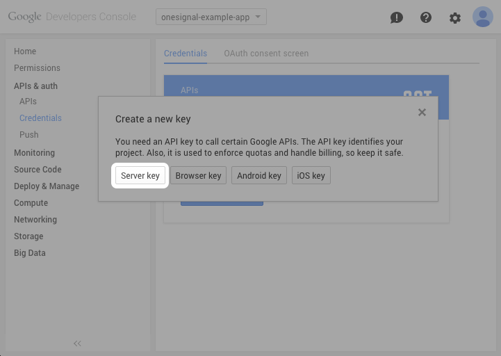Find your API Key. Save this number!
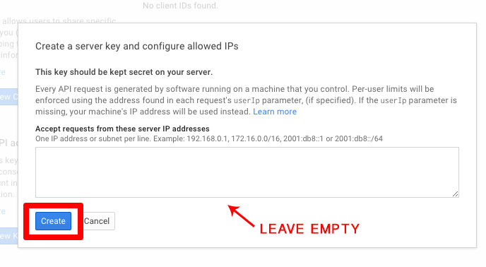API Key
Save your API key. You'll need it on the next page.
- 6
-
You've successfully created and configured your Google project! You should have:
- Your Project Number. It looks something like
703322744261. - Your API key. It looks something like
AIzBSyC_N8hcAeDaZEELfPadGnKBWE5zrmAdYfr.
Click Create an Account & App to continue.
- Your Project Number. It looks something like
Now that we have our Google Project Number and API Key, we'll create and configure a OneSignal app.
- 1
-
Create a OneSignal account or log in to your existing account.
- 2
-
Click Add a new app.
If you're a new user, a welcome popup will appear. You can click Add a new app on the last screen.
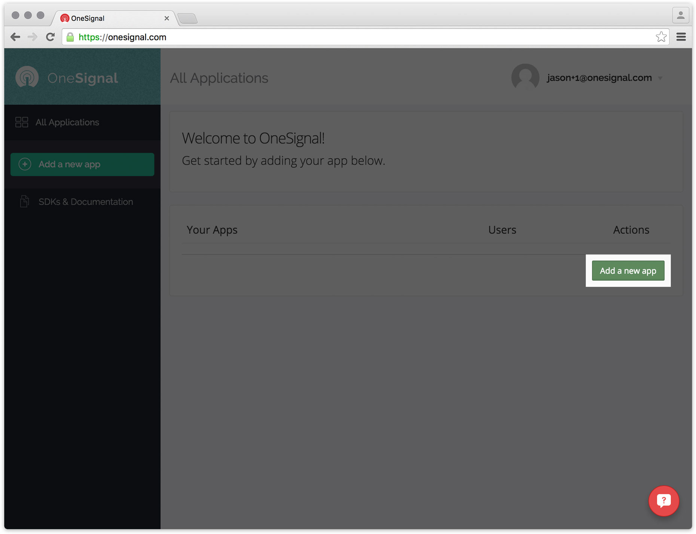Choose any name for your app. Here we use
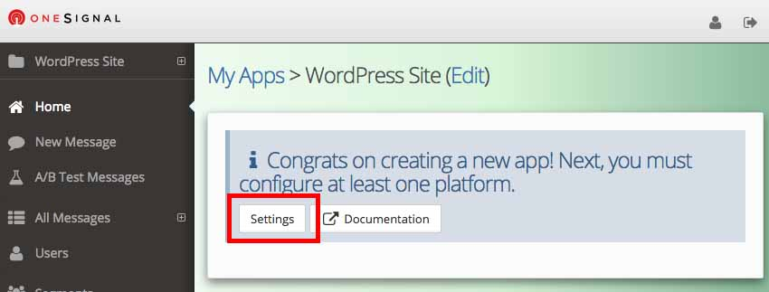Wordpress Demo. Click Create. - 3
-
Select the Website Push platform and click Next.
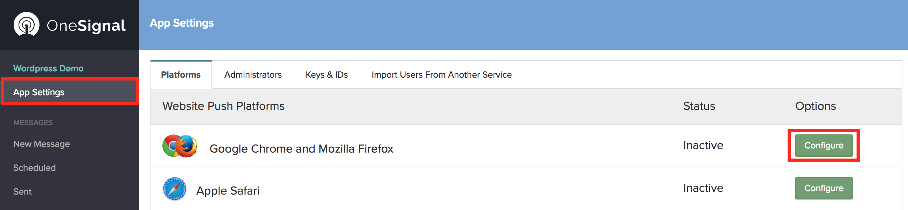 - 4
-
Select the Google Chrome sub-platform and click Next.
Setting up web push notifications is best first on Google Chrome because:
- Chrome is the most popular browser
- Chrome web push has the most platform support (Windows, Mac OS X, Linux, and Android)
- A completed Chrome web push setup is required to set up Firefox web push
Instructions to set up Firefox & Safari web push are available at the end of this guide.
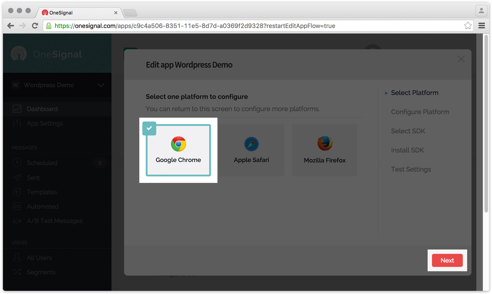 - 5
-
In this step, we focus only on filling out the Site URL. 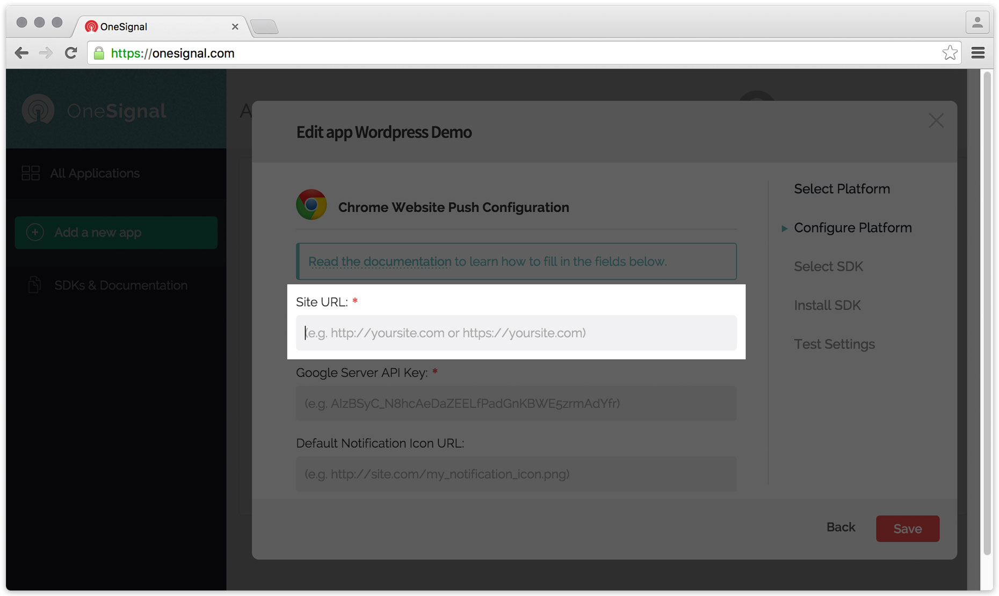
Enter the URL to your site's domain. The purpose of this field is to prevent other sites from hijacking your keys to impersonate you and send push notifications on your behalf. Please note:
-
Don't include trailing slashes
Instead of using
http://domain.com/, usehttp://domain.cominstead. -
Don't include subfolders
Even if your WordPress blog is hosted on
http://domain.com/resource/blog, usehttp://domain.com -
Include the correct protocol
If your site uses HTTPS, use
https://domain.com. If your site uses a mix of HTTPS/HTTP or only HTTP, usehttp://domain.com. If you're not sure, contact us!.
You may use two special properties instead of the URL to your site domain:
-
localhostYou can use this to test locally.
-
*This allows all sites. Please don't use this on production, otherwise any other site can send push notifications on your behalf.
-
- 6
-
In this step, we focus only on filling out the Google Server API Key. 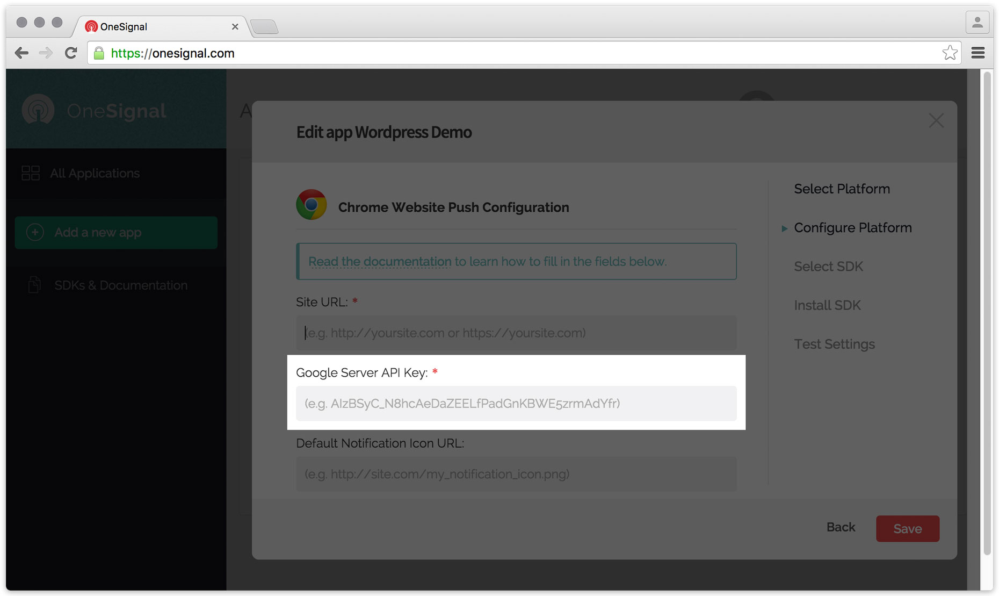
Enter the API Key you saved from the previous page.
- 7
-
In this step, we focus only on filling out the Default Notification Icon URL. 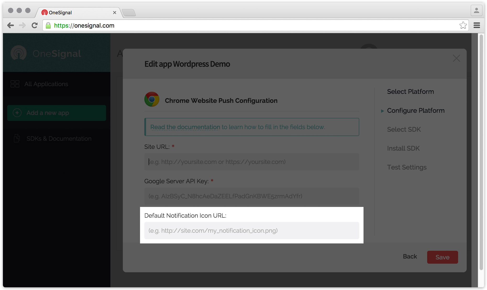
Enter the complete URL to your notification icon. Please note:
-
Your notification icon must be
80 pixels × 80 pixelslargeOn some platforms, larger icons are forcefully downsized to
40 × 40and centered with an ugly white 20 pixel margin - The default OneSignal notification icon will be used as a default if you don't choose one
-
- 8
-
In this step, we focus only on the HTTP Fallback Mode.
This step is important — read through it to see if it applies to you!

http://domain.comHTTP
Orhttps://domain.comHTTPS
Check the My site is not fully HTTPS box if:
- You already know your site doesn't support HTTPS
- Your site supports HTTPS, but your site can be viewed on
http://domain.com, without being automatically redirected tohttps://domain.com
Next Steps
The following steps only apply if you've checked My site is not fully HTTPS.
- 9
-
Create a Google Developers account or log in to your existing account.
Step 3